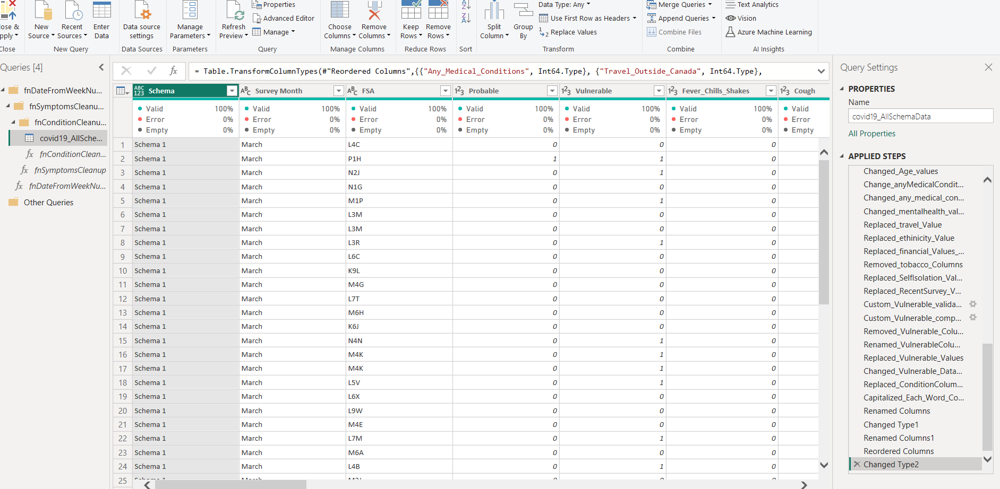

This dataset is about pre-clinical COVID-19 data,based on survey responses collected from 294,106 Canadians from March 23rd until July 30th 2020, using a platform developed by Flatten, a Canadian non-profit organization. Downloaded the dataset from physionet for learning purposes.
To analyze the impact of COVID-19 on mental health, I followed a structured data analytics approach:
Tool Used: Jupyter Notebook
I thoroughly reviewed the information available on PhysioNet to understand the data collection process. Here are some key observations:
Tool Used: Microsoft PowerBI
After gaining an understanding of the data, I proceeded with the cleaning process using Microsoft Power BI Desktop.
Loaded the data after data cleaning and started with building Insights. Here are the observations:
The pbix file has been updated in GitHub Repository
The COVID-19 pandemic demonstrated that a developed country like Canada can even remain vulnerable to public health emergencies with significant health and other socio-economic impacts. People were affected mentally with scarcity of various daily needs.
